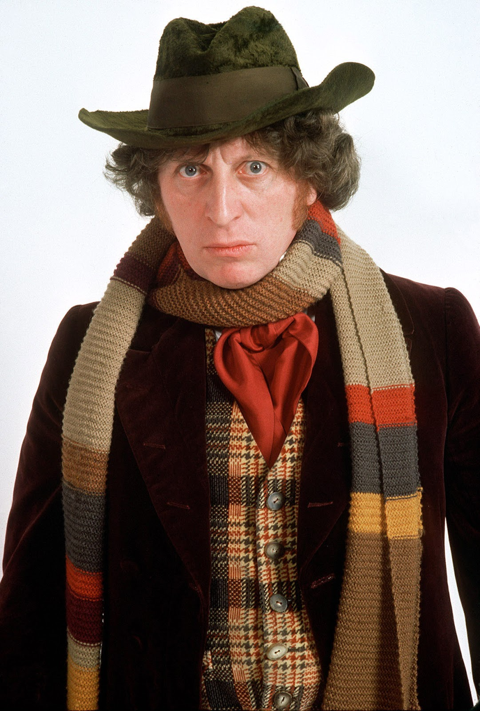

Tom Baker


Season 12 (1974–1975)
Robot
The Ark in Space
The Sontaran Experiment
Genesis of the Daleks
Revenge of the Cybermen
Season 13 (1975–1976)
Terror of the Zygons
Planet of Evil
Pyramids of Mars
The Android Invasion
The Brain of Morbius
The Seeds of Doom
Season 14 (1976–1977)
The Masque of Mandragora
The Hand of Fear
The Deadly Assassin
The Face of Evil
The Robots of Death
The Talons of Weng-Chiang
Season 15 (1977–1978)
Horror of Fang Rock
The Invisible Enemy
Image of the Fendahl
The Sun Makers
Underworld
The Invasion of Time
Season 16: The Key to Time (1978–1979)
The Ribos Operation
The Pirate Planet
The Stones of Blood
The Androids of Tara
The Power of Kroll
The Armageddon Factor
Season 17 (1979–1980)
Destiny of the Daleks
City of Death
The Creature from the Pit
Nightmare of Eden
The Horns of Nimon
Shada
Season 18 (1980–1981)
The Leisure Hive
Meglos
Full Circle
State of Decay
Warriors' Gate
The Keeper of Traken
Logopolis